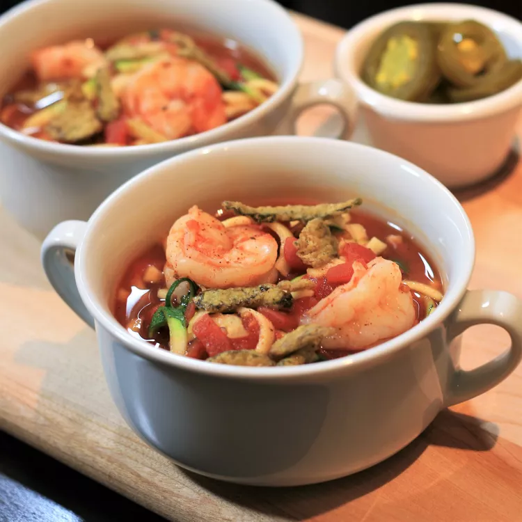

Home
Tortilla Soup

Description
Soup de tortilla.
Ingredients
- Zuchini: Pound of ground meat
- 2 cans petite diced tomatoes
- 1 can low-sodium chicken broth
Steps
- Cut zucchini in half, then make a cut lengthwise on both sides about 1/4-inch deep. Cut into small noodles using a spiralizer.
- Combine tomatoes, broth, chili powder, red pepper flakes, oregano, and black pepper in a large saucepan over medium-high heat. Bring soup to a simmer, reduce heat, and cook for 15 minutes.
- Add shrimp and desired amount of zucchini. Simmer until shrimp is pink, 3 to 5 minutes. Ladle into soup bowls.
Recipe ripped from here